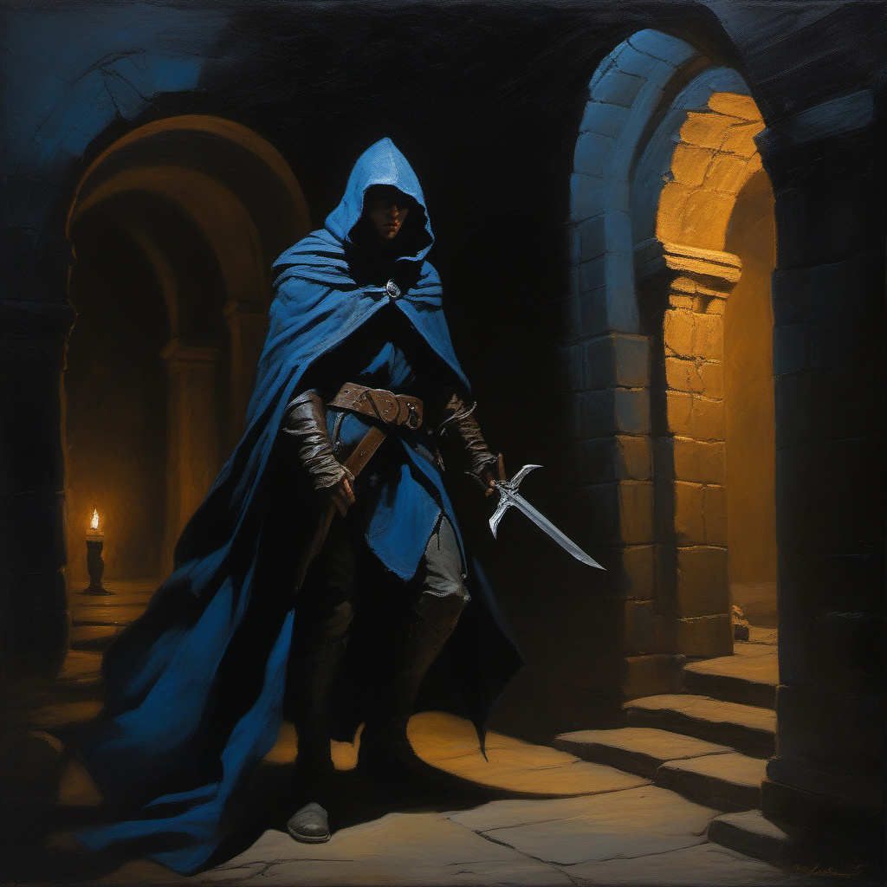
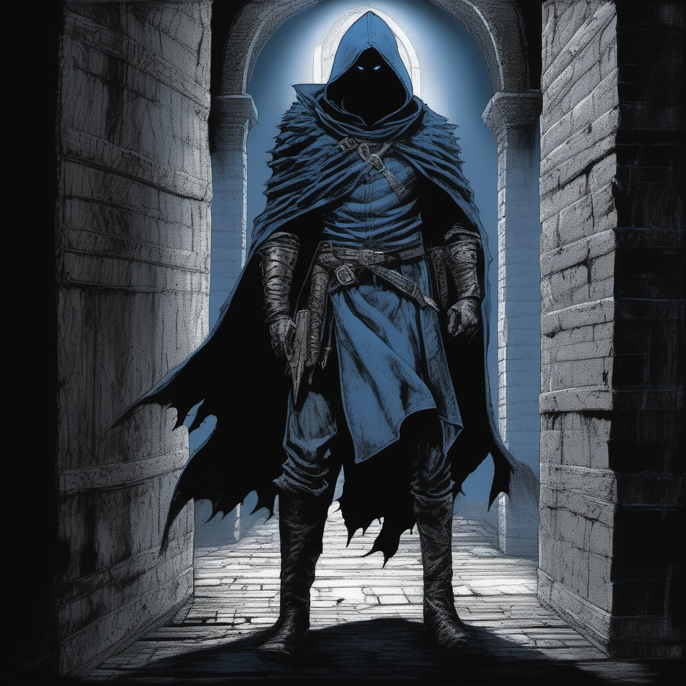
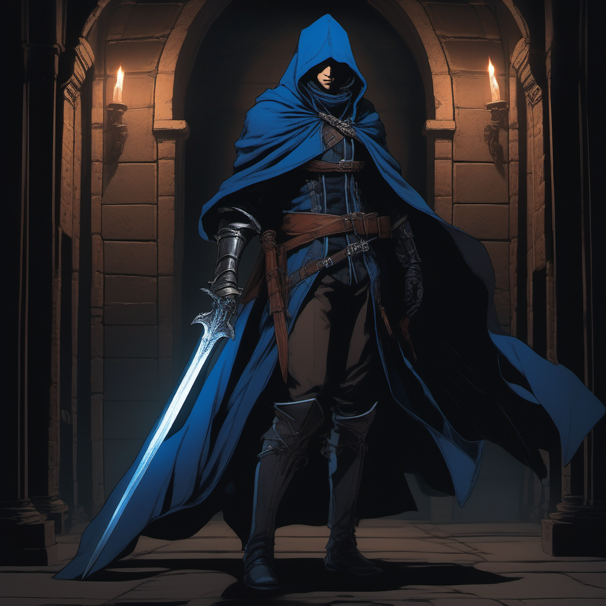
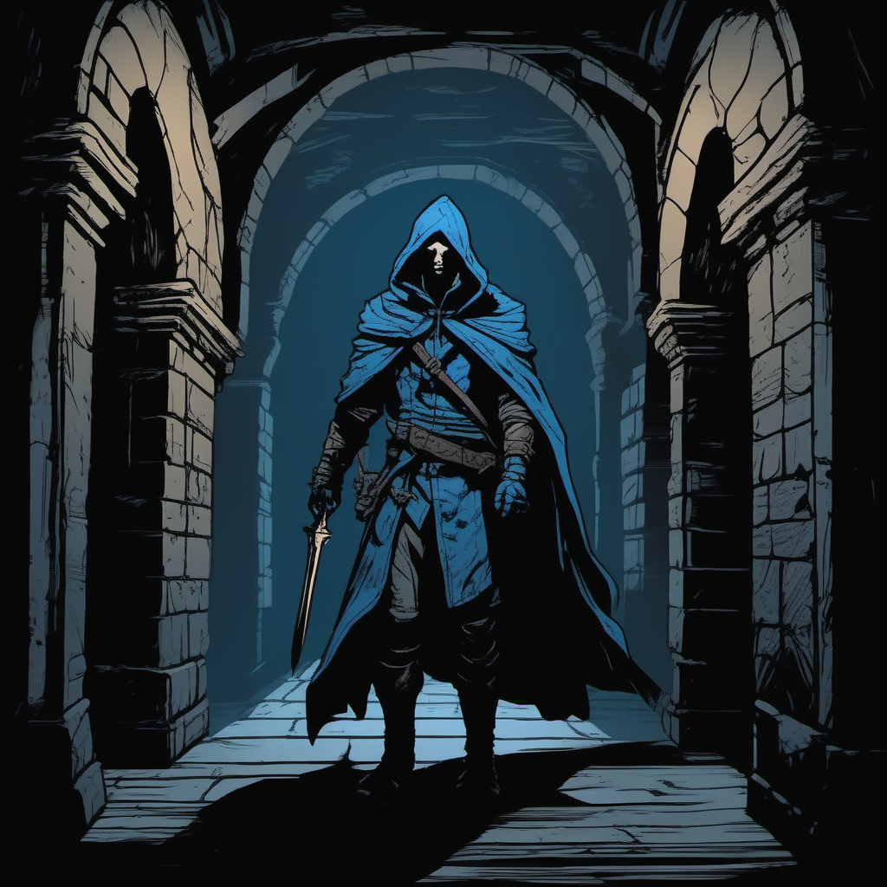
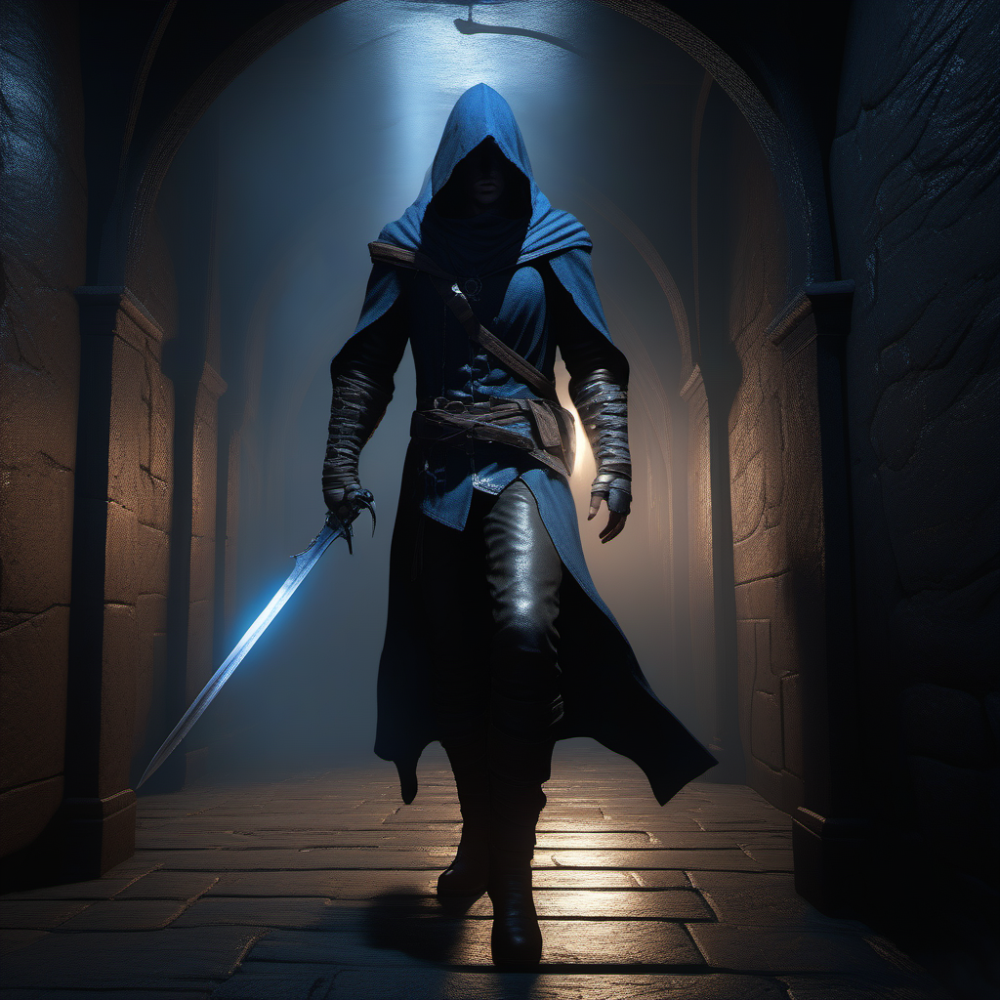

フラゼッタ風。クラシカルな油絵タッチ、重厚な筆致とキアロスクーロ（明暗法）。

ベルセルク風。インク/クロスハッチの質感、硬派でグリムダーク。漫画的な力強さ。

悪魔城ドラキュラ/小島文美風。シャープな線画、セルシェード、ダークな色調。

Darkest Dungeon / Mike Mignola風。太いアウトライン、限定パレット、木版画的。

AAA / UE5品質。フォトリアル、シネマティック、ボリュメトリックフォグ。